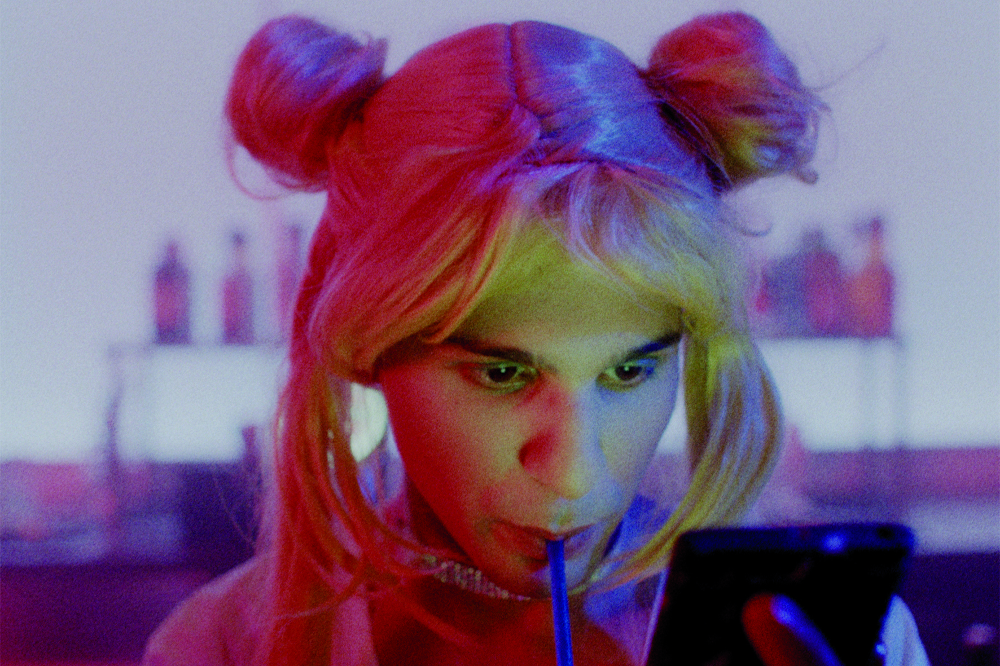
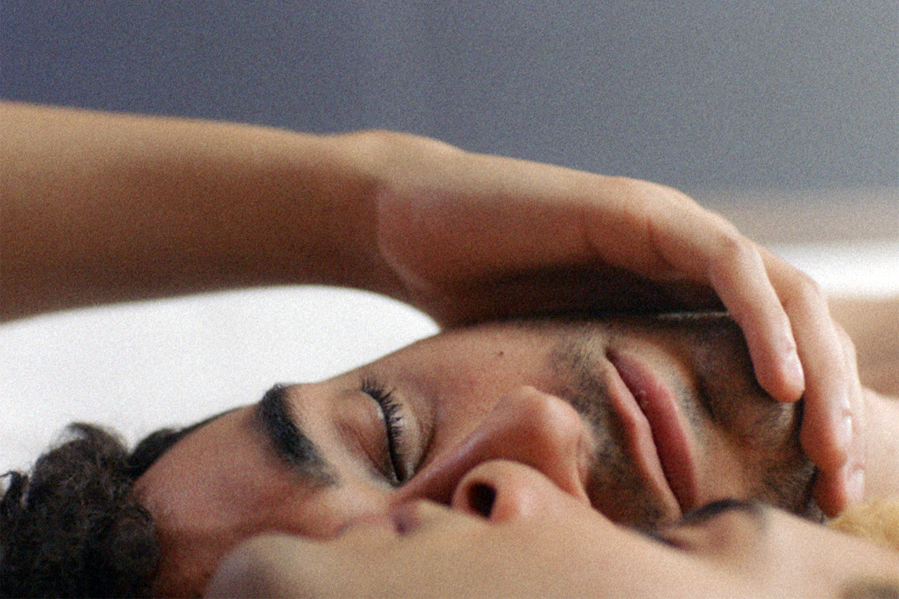
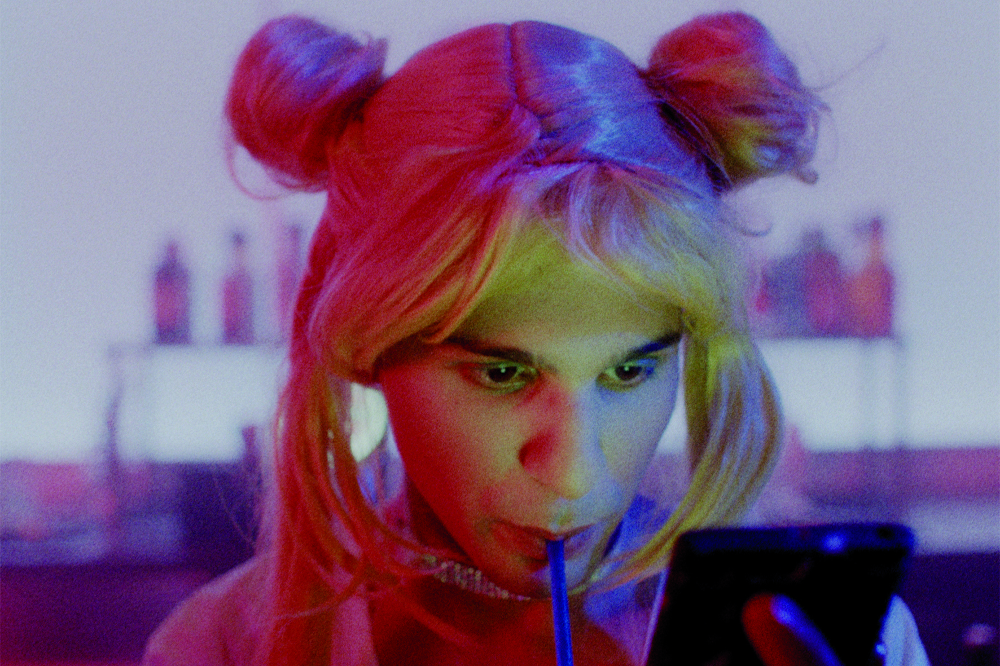
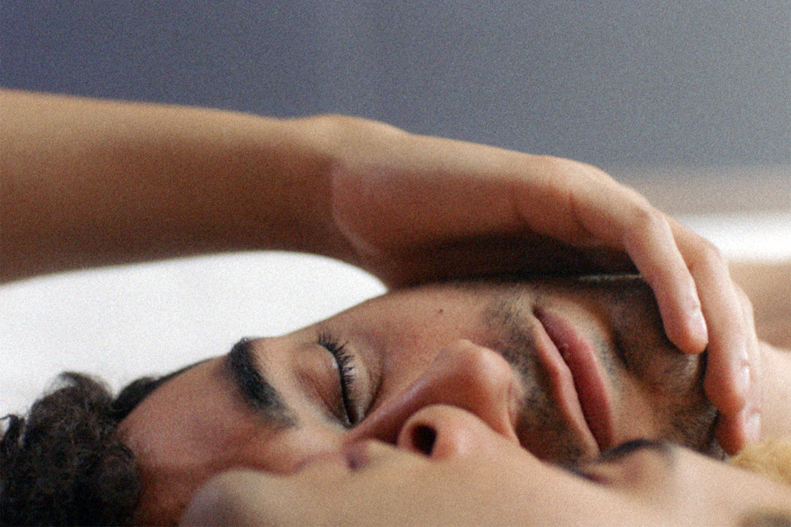

Lola vers la Mer by Laurent Micheli
Futur Drei by Faraz Shariat
Date: 4/27
Time: 18:00-22:30
Location: EUROLIVE CINEMA, Shibuya (KINOHAUS 2F)
日にち：4月27日（水）
時間：18:00-22:30
場所：ユーロライブ（渋谷）
Futur Drei (92min) - Faraz Shariat, Germany, 2020
20:00-21:30
Lola (90min) - Laurent Micheli, The Netherlands / France, 2019
18:00-19:30
+ Talk: Q&A with Faraz Shariat, director of Futur Drei
21:30-22:30
18:00〜『海に向かうローラ』
(監督ローレント・ミケーリ｜2019年｜90分｜ベルギー/フランス)
提供：オランダ王国大使館/ Movies that Matter Festival (オランダ人権映画祭)
ベルギーのシェルターハウスで暮らす18歳のローラは、ある日突然母親を亡くしてしまう。しかし犬猿の仲である父親のフィリップは、彼女を葬儀に参列させようとしない。怒ったローラは遺灰を持ち出してしまうが、フィリップは“砂丘に散骨してほしい”という妻の遺言をかなえるために、遺灰を離さないローラを乗せて車を走らせる。性別適合手術を応援してくれていた母を失い、ローラはやがて父親と向き合いはじめる。演技未経験のミヤ・ボラルスが主役を好演。父親役には歳を重ねたブノワ・マジメル、ローラの親友役は『セックス・エデュケーション』のラヒーム役で注目のサミ・ウタルバリが務めている。
（予告映像：https://youtu.be/puuUxbX9XjQ ）
20:00〜『未来は私たちのもの』
(監督ファラズ・シャリアット｜2020年｜93分｜ドイツ)
提供：ゲーテ・インスティトゥート東京
イラン系移民の両親を持つミレニアル世代の青年パーヴィスは、両親がドイツで築いた安定した快適な環境で育つ。出会い系アプリのデート、レイヴやパーティで暇つぶしをしながら、地方暮らしの退屈さを紛らわせている。ある日、万引きがバレて、社会奉仕活動を命じられたパーヴィスは、難民施設で通訳として働くことになり、そこでイランからやってきたきょうだいバナフシェとアモンに出会う。3人の間に微妙なバランス関係が生まれ、ドイツにおけるそれぞれの未来が平等でないことを彼らも次第に気づき始める。
1994年生まれのファラズ・シャリアット監督による自伝的デビュー作。過激でエキセントリックな演出ながらも、ドイツにおける移民系の青年の成長を偽りのない形で描く。繊細でポップ、かつ力強く多様性を肯定する訴えが評価され、2019年のファースト・ステップス賞で最優秀長編映画に選ばれ、若い俳優たちのアンサンブルがゲッツ・ゲオルゲ奨励賞にも輝いた。2020年、世界プレミアを迎えたベルリン映画祭では2部門でテディ賞を受賞。
（予告映像：https://youtu.be/_c4zydiCZhM ）
＊ ゲスト：ファラズ・シャリアット監督（オンラインLive Q&A）
＊ 手話通訳つき
images: © Les Films du Losange, © Juenglinge Film
  
 